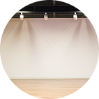
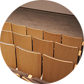
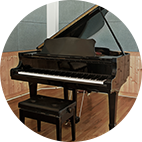
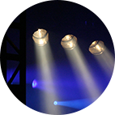
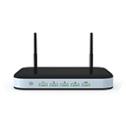

선의의료재단에서는 지역주민들의 사회적 유대를 형성하고, 행복한 문화공동체 만들기에 이바지 하고자 2018년부터 병원 11층 선의채플홀을 열어
공간지원사업을 진행하고 있습니다.
지역 내 아동청소년을 포함한 지역주민들이 마음껏 문화재능을 펼칠 수 있는 모두의 공간입니다. 약 70여명 정도 수용이 가능한 공간으로 무대, 의자,
대관이용료는 무료이며, 대관신청(예약진행)을 통해 진행됩니다.
공간 지원사업 보유물품

무대
빔프로젝트⁄스크린

의자(70개)

그랜드피아노
음향시설

조명시설

와이파이
이용안내
위치
노원구 서울 노원구 동일로 1419, 디와이 빌딩 11층 강당 (노원역 도보 1분)
운영목적
소공연장, 작은 전시회, 강연, 소모임, 독서모임 등 자유롭게 이용 가능
대관예약
홈페이지 스케줄 보시고 비는 시간 예약 가능 1일⁄4시간 이상 대관 시, 월 2회 이상 대관 시 별도협의 필요
운영시간
10:00~22:00 공휴일도 이용가능
대관진행 시 필수적으로 읽어주세요.
1. 공간 내 근무자가 없습니다. 대관 이용 후 정리정돈(쓰레기처리) 해주시고, 자리 배치 변경/물품 위치 변경 시 미리 협의해 주세요.
2. 예약 시간을 준수해 주세요. 다음 예약 팀을 위해 5분 전 마무리 해주세요.
3. 주차시설은 이용이 불가합니다. (대중교통을 이용해 주세요)
4. 외부음식물 반입은 불가합니다.
5. 제품 판매 등 영리 목적의 대관은 불가합니다.
6. 이용 시 시설 파손 발생 시 배상해 주셔야 합니다.
7. 그 외 공간 이용에 대한 문의 사항은 02-884-5510에 문의 부탁드립니다.
위 사항을 지키지 않으실 경우 대관 중이라도 퇴실 조치될 수 있습니다. 이외 대관 이용 시 선의의료재단 사무국의 관리사항을 따라 주셔야 합니다.